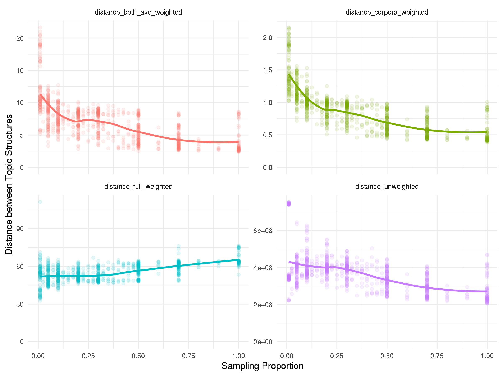
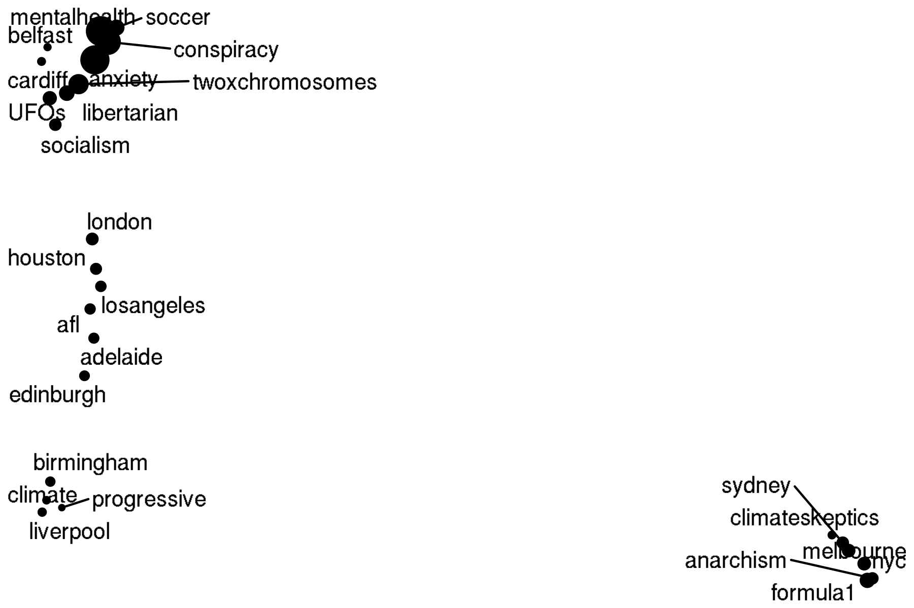
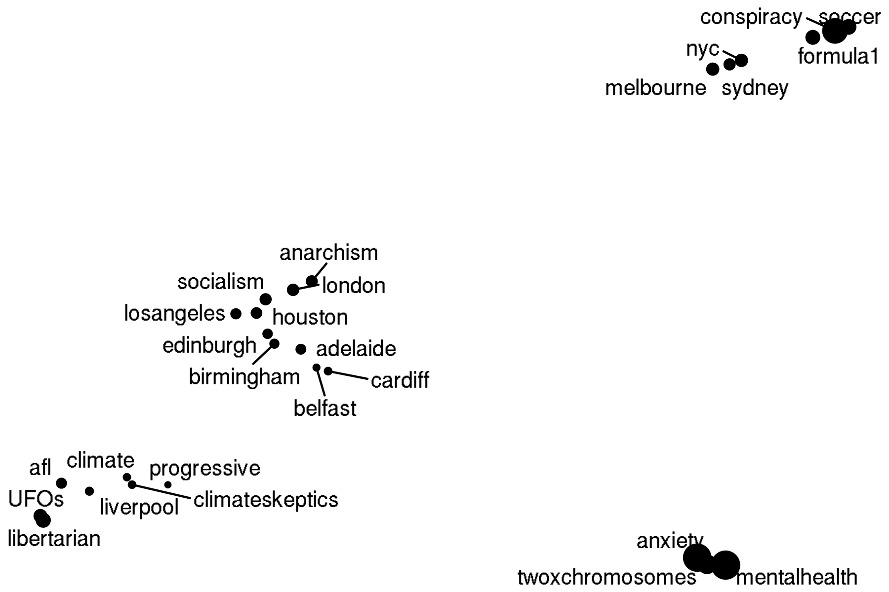
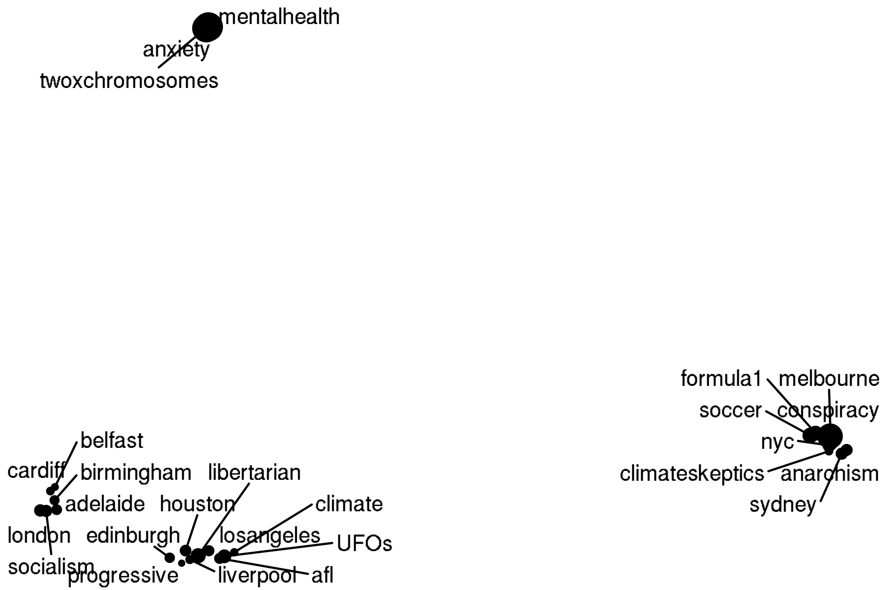
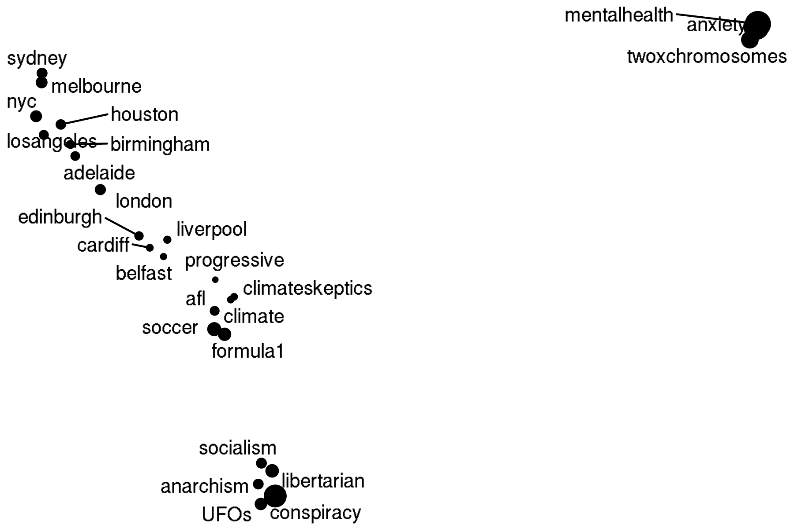

Chapter 6 Sampling Problem
6.1 Sampling problem motivation
We don’t understand statistical justification for topic modelling. We want topic modeling to be consistent and unbiased. Knowing that topic structures found from topic modelling on documents drawn from the same distribution converge to the topic structure that generated documents would justify the use of topic modelling.
6.2 Consistency of topics
If we assume that documents are generated according to a topic structure \(\theta\), and \(T_s\) are the topic structures generated from the first \(s\) documents generated by the model, then we want;
\[lim_{s \to \infty} Pr \left( \left<T_s, \theta \right> > \varepsilon \right) = 0,\] where \(\left<\cdot,\cdot \right>\) is a distance metric for topic structures.
6.3 Distances between topic strutures
To determine the consistency of topics we need a way of computing distances between topic structures. There is no current method for doing so in the literature that incorperates the hierarchical nature of topics found through network topic modelling. Distances between trees with leaf-labelled nodes on a free leafset exists in the literature however it runs in \(O(N!)\) time and therefore is infeasible for topic structures which may have vocabularies in the order of tens of thousands of words. (This was attempted but the code never finished running). To be able to compute distances between topic structures we need an efficient method. Below we present a way that runs in \(O(N^2)\) time with storage requirements of \(O(N)\). This results in the topic distance comparison running in a small enough window of time that allows for pairwise comparisons between multiple topic structures, and hence allows for a deep understanding of the statistical properties of topic modelling.
6.3.1 Simple definition for topic structure distances
We can define this distance metric as \[\left< T_s,T_m \right> := \sum_{i=1}^n\sum_{j=1}^n |\hat{{T_s}_{ij}^*}-\hat{{T_m}_{ij}^*}|,\]where \(T^*\) is the path length matrix and \(\hat{T^*}\) is the restriction of \(T^*\) to leaf nodes of \(T^*\).
Proposition 6.1 \(\left< \cdot, \cdot \right>\) is a distance metric
::: {.proof #metric} We need to show the following:
- \(\left< T_s, T_m \right> = 0 \iff T_s = T_m\)
Firstly, \({T_s}_{ij}^*-{T_m}_{ij}^* = 0 \iff \hat{{T_s}_{ij}^*} = \hat{{T_m}_{ij}^*}\) for all \(i\) and \(j\). This implies that \(\left< T_s, T_m \right> = 0 \iff \hat{T_s^*} = \hat{T_m^*}\). Now \(T_s = T_m \implies \hat{T_s^*} = \hat{T_m^*}\) so all that is left is to show the converse implication. It is not difficult to see that the path length matrix restricted to leaf nodes uniquely defines a topic-structure tree (in fact we construct the trees using this information), showing that \(\hat{T_s^*} = \hat{T_m^*} \implies T_s = T_m\) and hence \(\left< T_s, T_m \right> = 0 \iff T_s = T_m\) as requi#AF97FC.
- \(\left< T_s, T_m \right> = \left< T_m, T_s \right>\)
Clearly \[ \sum_{i=1}^n\sum_{j=1}^n |\hat{{T_s}_{ij}^*}-\hat{{T_m}_{ij}^*}| = \sum_{i=1}^n\sum_{j=1}^n |\hat{{T_m}_{ij}^*}-\hat{{T_s}_{ij}^*}|\] as \(|a-b| = |b-a|\).
- \(\left< T_s, T_k \right> \leq \left< T_s, T_m \right> + \left< T_m, T_k \right>\)
\[\begin{align} \left< T_s, T_k \right> &= \sum_{i=1}^n\sum_{j=1}^n |\hat{{T_s}_{ij}^*}-\hat{{T_k}_{ij}^*}| \\ &= \sum_{i=1}^n\sum_{j=1}^n |\hat{{T_s}_{ij}^*}-\hat{{T_m}_{ij}^*}+\hat{{T_s}_{ij}^*} -\hat{{T_k}_{ij}^*}| \\ &\leq \sum_{i=1}^n\sum_{j=1}^n \left( |\hat{{T_s}_{ij}^*}-\hat{{T_m}_{ij}^*} | + |\hat{{T_s}_{ij}^*} -\hat{{T_k}_{ij}^*}| \right)\\ &= \sum_{i=1}^n\sum_{j=1}^n |\hat{{T_s}_{ij}^*}-\hat{{T_m}_{ij}^*} | + \sum_{i=1}^n\sum_{j=1}^n|\hat{{T_s}_{ij}^*} -\hat{{T_k}_{ij}^*}| \\ &= \left< T_s, T_m \right> + \left< T_m, T_k \right> \end{align}\]
6.3.2 Improved definition for topic structre distances
The previous definition makes no distinction between high and low density words. It places the same penalty on high density words being far apart as it does for low density words. An improved model would incorporate this into the distance metric.
\[\left< T_s,T_m \right> := \sum_{i=1}^n\sum_{j=1}^n p(w_i)p(w_j)|\hat{{T_s}_{ij}^*}-\hat{{T_m}_{ij}^*}|,\] where \(p(w_i)\) and \(p(w_i)\) are the empirical (or known) densities for words \(w_i\) and \(w_j\) respectively. If we are comparing topic structures drawn from the same distribution, and \[\left< T_s,T_m \right> := \sum_{i=1}^n\sum_{j=1}^n |p({w_s}_i)p({w_s}_j)\hat{{T_s}_{ij}^*}-p({w_m}_i)p({w_m}_j)\hat{{T_m}_{ij}^*}|,\] when the topic structures are drawn from different distributions.
EDIT: we can see that the latter is actually pretty bad. I think we want to weight the whole of \(|\hat{{T_s}_{ij}^*}-\hat{{T_m}_{ij}^*}|\) and not the \(\hat{{T_s}_{ij}^*}\) inside otherwise things go wrong.
TODO: check this stuff is still a distance.
6.3.2.1 Defining distances
I’ll need to come up with better names for this stuff.
6.3.2.2 Unweighted definition
\[\left< T_s,T_m \right> := \sum_{i=1}^n\sum_{j=1}^n |\hat{{T_s}_{ij}^*}-\hat{{T_m}_{ij}^*}|,\]
6.3.2.3 Corpora weighted definition
\[\left< T_s,T_m \right> := \sum_{i=1}^n\sum_{j=1}^n p(w_i)p(w_j)|\hat{{T_s}_{ij}^*}-\hat{{T_m}_{ij}^*}|,\]
where \(p(w_i)\) and \(p(w_i)\) are the empirical densities for words \(w_i\) and \(w_j\) respectively across all corpora. (This is good when samples are drawn from the same distribution, not when we have multiple different distributions)
6.3.2.4 Ave weighted definition
\[\left< T_s,T_m \right> := \sum_{i=1}^n\sum_{j=1}^n p(w_i)p(w_j)|\hat{{T_s}_{ij}^*}-\hat{{T_m}_{ij}^*}|,\]
where \(p(w_i)\) and \(p(w_i)\) are the empirical densities for words \(w_i\) and \(w_j\) respectively found from the two corpora considered, i.e. \(p(w_i) = \frac{p(w_i | C_1) + p(w_i | C_2)}{2}\).
6.3.2.5 Full weighted definition
\[\left< T_s,T_m \right> := \sum_{i=1}^n\sum_{j=1}^n |p({w_s}_i)p({w_s}_j)\hat{{T_s}_{ij}^*}-p({w_m}_i)p({w_m}_j)\hat{{T_m}_{ij}^*}|,\]
6.4 Working example for computing the topic structure distance
6.4.1 Finding the path length matrix \(\hat{T^*}\)
Since we are in a leaf-labelled tree we label to non-leaf nodes with a unique ID.
We can represent a tree \(T\) by labelling each leaf node by the paths from the root node. Consider the below tree \(T_1\):
We can represent \(T_1\) using the path list below.
| node | path |
|---|---|
| A | A-4-2-1 |
| B | B-4-2-1 |
| C | C-5-2-1 |
| D | D-5-2-1 |
| E | E-6-3-1 |
| F | F-6-3-1 |
The path length between two leaf-nodes can be found by finding the first matching labels in their path strings.
I.e. for \(A\) and \(C\) the path strings are “A-4-2-1” and “C-5-2-1”, which first match at Node \(2\). There are two uncommon nodes in the string (the nodes themselves, and the immediate parents). This means the common ancestor is two nodes up the tree, and hence the path length between nodes \(A\) and \(C\) equals \(4\). In this way we can construct \(\hat{T_1}^*\), the matrix of path lengths.
\[ \hat{T_1^*} = \begin{bmatrix}\ 0 & 2 & 4 & 4 & 6 & 6\\ 2 & 0 & 4 & 4 & 6 & 6\\ 4 & 4 & 0 & 2 & 6 & 6\\ 4 & 4 & 2 & 0 & 6 & 6\\ 6 & 6 & 6 & 6 & 0 & 2\\ 6 & 6 & 6 & 6 & 2 & 0\\ \end{bmatrix} \]
The dimensions of the above matrix are \(|V|^2\) where \(V\) is the vocabulary of the documents. This would cause memory issues if we were to compute the whole matrix and store it in memory. Instead, we will loop through as the matrix. Also note that in Table the network in the path representation has \(|V|\) elements where \(V\) is the vocabulary of the documents so this representation is also memory efficient.
Consider a second tree \(T_2\) that has similar structure, with differences indicated by purple nodes.
We could find the path list representation and hence path length matrix \(\hat{T_2^*}\).
| node | path |
|---|---|
| A | A-4-2-1 |
| B | B-4-2-1 |
| C | C-4-2-1 |
| D | D-5-2-1 |
| E | E-6-3-1 |
| F | F-6-3-1 |
| G | G-7-3-1 |
\[ \hat{T_2^*} = \begin{bmatrix}\ 0 & 2 & 2 & 4 & 6 & 6 & 6\\ 2 & 0 & 2 & 4 & 6 & 6 & 6\\ 2 & 2 & 0 & 2 & 6 & 6 & 6\\ 4 & 4 & 2 & 0 & 6 & 6 & 6\\ 6 & 6 & 6 & 6 & 0 & 2 & 2\\ 6 & 6 & 6 & 6 & 2 & 0 & 2\\ 6 & 6 & 6 & 6 & 2 & 2 & 0\\ \end{bmatrix} \]
6.4.2 Finding the topic structre distance \(\left<T_1, T_2 \right>\)
We have a small problem before we can find the distances between the topic structures. Node \(G\) was not present in \(T_1\). In general, we can overcome this by adding any nodes not present under an entirely new topic hierarchy, so that they have maximum path length from all nodes.
In the rest of this problem we will use the Simple definition for topic structure distances.
Then the topic structure distance is the sum of the absolute differences of the two path length matrices. Denote the absolute differences by \(D\).
\[\begin{align} D &= \left| \begin{bmatrix} 0 & 2 & 4 & 4 & 6 & 6 & 6\\ 2 & 0 & 4 & 4 & 6 & 6 & 6\\ 4 & 4 & 0 & 2 & 6 & 6 & 6\\ 4 & 4 & 2 & 0 & 6 & 6 & 6\\ 6 & 6 & 6 & 6 & 0 & 2 & 6\\ 6 & 6 & 6 & 6 & 2 & 0 & 6\\ 6 & 6 & 6 & 6 & 6 & 6 & 0\\ \end{bmatrix} - \begin{bmatrix} 0 & 2 & 2 & 4 & 6 & 6 & 6\\ 2 & 0 & 2 & 4 & 6 & 6 & 6\\ 2 & 2 & 0 & 2 & 6 & 6 & 6\\ 4 & 4 & 2 & 0 & 6 & 6 & 6\\ 6 & 6 & 6 & 6 & 0 & 2 & 2\\ 6 & 6 & 6 & 6 & 2 & 0 & 2\\ 6 & 6 & 6 & 6 & 2 & 2 & 0\\ \end{bmatrix}\right| \\ &= \begin{bmatrix} 0 & 0 & 2 & 0 & 0 & 0 & 0\\ 0 & 0 & 2 & 0 & 0 & 0 & 0\\ 2 & 2 & 0 & 0 & 0 & 0 & 0\\ 0 & 0 & 0 & 0 & 0 & 0 & 0\\ 0 & 0 & 0 & 0 & 0 & 0 & 4\\ 0 & 0 & 0 & 0 & 0 & 0 & 4\\ 0 & 0 & 0 & 0 & 4 & 4 & 0\\ \end{bmatrix} \end{align}\]
Then \[\begin{align} \left< T_1, T_2 \right> &= \sum_{i,j} D_{i,j} \\ &=24 \end{align}\]
The code for this is found in Tree Distance Code
6.5 Topic distances for samples drawn from the same corpus
NOTICE!
This is a work in progress!
The following section describes work done using code found in the appendix section Topic distances for samples drawn from the same corpus REPO.
Data was scraped from the subreddits; Adelaide, Liverpool, London, Melbourne, Sydney from 2019-01-01 to 2020-11-16. Each of the 44,157 posts across these subreddits is considered a document for the purpose of topic modelling. TODO: Give more info on preprocessing and cleaning.

The following links define what I mean by the distances.
This is cool! The corpora weighted distance is probably the most applicable here as we’re drawing samples from the same corpus so we know the densities of the words. Interestingly the full weighted distance goes up, probably a bad formulation as mentioned previously.
6.6 Topic distances for samples drawn from the same distrubtion
NOTICE!
This is a work in progress!
6.6.1 Idea
- Find a reasonable topic distribution by running topic modelling on a real corpus.
- Define a generative process using the hSBM with the topic distribution found in Step 1.
- Sample according the hSBM generative process
BUT - what does this actually mean?
In LDA there is a clear generative process for documents as it’s a generative model for documents.
hSBM is a generative model that assumes edges are distributed between existing nodes in a network according to a community structure.
To generate a new document, we can assume some community structure, and then ADD a document node to the network by randomly assigning it to a community according to the community densities.
From this, we can use the hSBM generative process to distribute edges to the word nodes to populate the document.
6.7 Topic distances for different corpora
NOTICE!
This is a work in progress!
Code is at Topic distances for different corpora REPO
6.7.1 Idea
Pick a bunch of subreddits.
Went with a mix of geographically related cities, sports, and interests. What we hope to see is that there is some similarity in the topic structures for similar subreddits. As an example, we would expect to see small distances between Adelaide, Melbourne, and Sydney.
- Fit hSBMs to the subreddits individually
- Find pairwise distances between topic structures
- Observe using MDS or similar
Notes: Tried MDS, t-SNE and UMAP, UMAP looked best.
6.7.2 Pairwise distances between subreddits
TODO: - Some subs don’t have a topic structure, str_split won’t work on these but this probably isn’t the main issue. Find out why they don’t have topic structure. -
6.7.2.1 Unweighted
The problem here is there are rich topic structures for soccer and conspiracy, making them have a large distance to everything. \(1/n\) weighting would be better than no weighting at all. We saw in Topic distances for samples drawn from the same corpus where the vocab size was unchanged; the unweighted strategy is worse anyway.

6.7.2.2 Corpora weighted
Structure emerges! Although note that corpora weighted distance isn’t as applicable here as this is looking at the overall word densities for ALL subs, not just the pairs we consider.

6.7.2.3 Ave weighted
This is probably what we want as it finds the word densities for the pairs we are considering.

6.7.2.4 Full weighted
Again not great.
